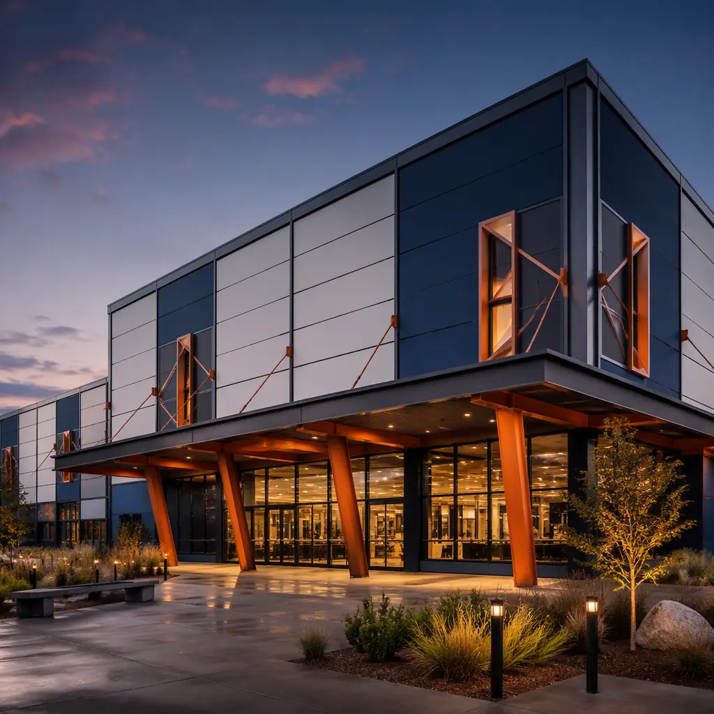
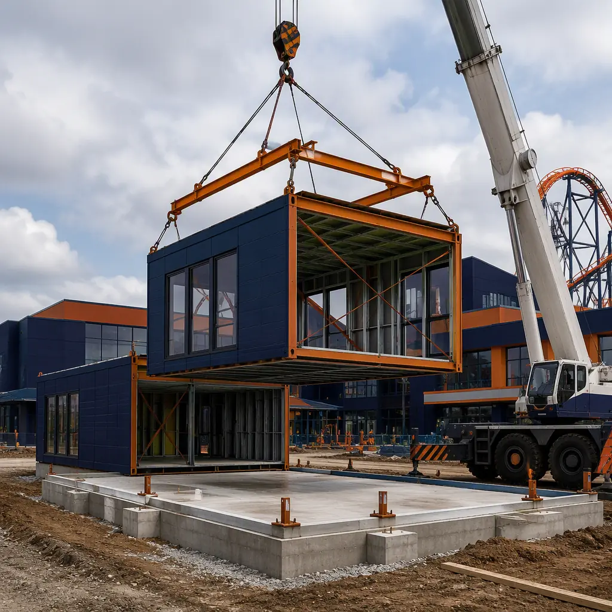
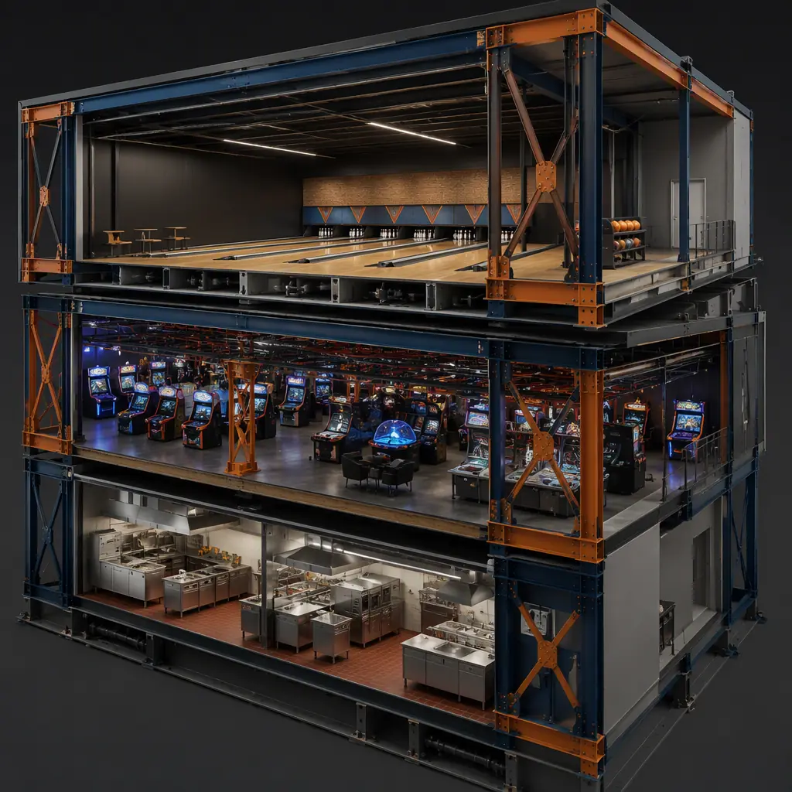
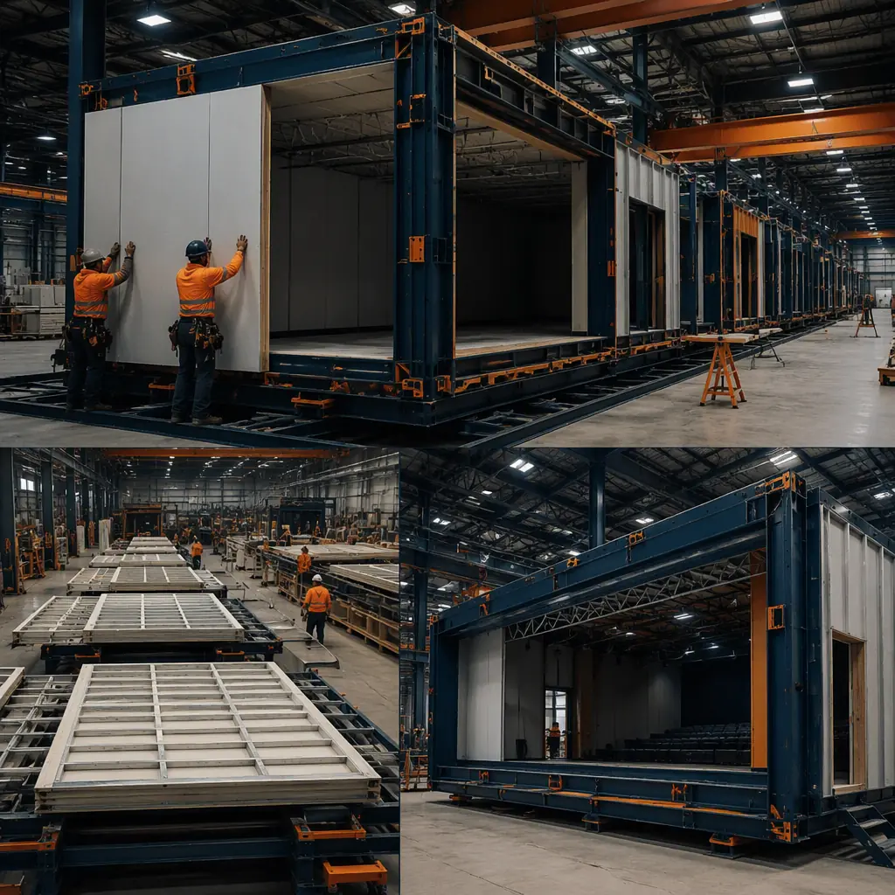
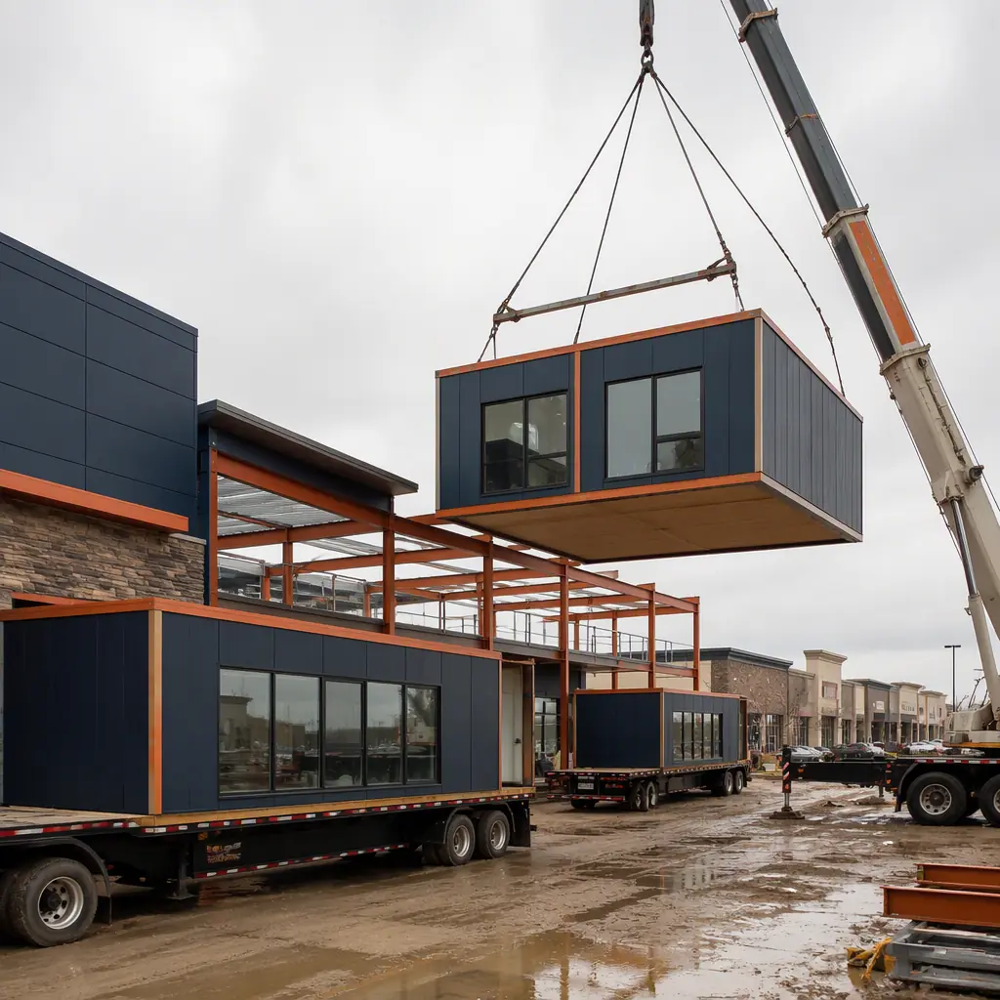

Family entertainment centers (FECs) — bowling alleys, arcades, laser tag arenas, and the hybrid "eatertainment" venues that combine all three — are one of the fastest-growing retail-adjacent building types in North America, and one of the most schedule-sensitive. FEC economics depend on opening before a trade area's demand is captured by a competitor, yet a conventional bowling center takes 12–18 months to build: long-span structure for the lane deck, dense electrical work for the arcade, heavy MEP for food service, and acoustical isolation between zones that are simultaneously loud and quiet. Modular prefabricated construction collapses that timeline to 14–18 weeks from design freeze to opening, because the building is assembled in a factory as parallel packages: lane-deck modules with the structural isolation engineered in, arcade zones pre-wired for the highest electrical density in commercial construction, and food-service modules with commercial kitchens factory-commissioned. The venue then arrives as finished modules, is set on a prepared slab in 2–4 weeks, and opens while a conventional competitor is still pouring foundations. The same program logic we document for modular restaurant construction and modular cinema construction applies to the FEC, with lane-deck engineering and arcade electrical density as the differentiators. This guide covers the FEC building program, the lane-deck structural challenge, zone-by-zone factory packages, cost structure, and the compliance path for assembly-occupancy entertainment venues.

Why FECs Are a Breakout Modular Segment
Four structural realities make entertainment venues unusually good modular candidates:
- Long spans meet factory steel. A 24-lane bowling center needs clear spans of 80–100 ft across the lane deck. Modular steel trusses and moment frames are fabricated in the factory to tight tolerances and bolted on site — the same clear-span logic we document for modular sports stadiums and arenas.
- The program repeats across locations. Chains rolling out the same FEC format in multiple trade areas can re-run identical modules at marginal engineering cost — the repeatable-design economics of modular franchise and chain rollout construction.
- Retail conversions are the growth engine. Vacant big-box stores and former movie theaters are the cheapest FEC real estate, and modular infill — new lane-deck and arcade modules installed inside an existing shell — converts them in 12–16 weeks. The conversion playbook is covered in our modular retail construction guide.
- The revenue clock is brutal. An FEC's value is its opening date: birthday-party bookings, league nights, and corporate events are sold months ahead. A 14–18 week modular delivery versus a 12–18 month conventional build is the difference between capturing and missing an entire demand cycle.

The Lane Deck — The Structural Heart of a Bowling Center
The bowling lane deck is the most demanding structural element in entertainment construction. A regulation lane is 60 ft from foul line to head pin plus 15 ft of approach, and the entire deck must sit on an isolation system that prevents ball impact and pin-setter vibration from transmitting into the building frame — or the concourse, restaurant, and arcade zones shake with every throw. Modular delivery solves this in the factory: lane-deck modules arrive with the isolation system, subfloor, and synthetic lane surface installed and leveled to the thousandth of an inch required for USBC-certified play, eliminating the on-site precision work that conventionally consumes months. The acoustical engineering of the deck assembly — impact isolation, airborne sound between the lane hall and adjacent quiet zones — follows the same discipline we document for modular building acoustics and soundproofing. Pin setters and scoring systems are installed and test-run in the factory, so the first ball thrown on site is a certified lane.
Arcade & Redemption Zones — Electrical Density at Its Peak
An arcade is the densest electrical load in commercial construction: 200–400 arcade and redemption machines in a 3,000–10,000 sq ft zone, each drawing continuous power, plus prize-wall lighting, network infrastructure for ticket and card systems, and security coverage for cash and prize inventory. Modular arcade packages are factory-wired with the machine power grid, data backbone, and lighting baked into the module structure — an FEC operator can wheel machines into a finished, powered zone on opening day. Redemption counters and prize walls arrive as millwork-integrated modules, and the security layer (CCTV, cash-room construction) is installed in the factory. The smart-building integration — networked power metering and occupancy systems — follows our modular smart building technology guide.

Laser Tag, VR & Active Zones
Modern FECs layer active attractions on top of bowling and arcades: laser tag arenas, VR rooms, trampoline courts, and soft-play structures. Each imposes a specific structural requirement — laser tag arenas need two-story black-box volumes with HVAC for sealed operation and theatrical lighting rigs; trampoline courts impose concentrated dynamic loads that the floor structure must be engineered for. As factory modules, these zones are built with the required clear heights, load ratings, and themed finishes installed, then craned into place as finished attractions. The structural engineering for concentrated dynamic loads and the themed envelope performance follow our modular factory QC systems and building envelope systems guides.
Food Service — The Revenue Engine That Can't Wait
Food and beverage drives 30–45% of FEC revenue, and the kitchen is the longest-lead trade in any entertainment build: hood systems, grease traps, fire suppression, health-department inspection, and staff training all stack at the end of a conventional schedule. Modular food-service packages invert that: the kitchen arrives factory-commissioned — equipment installed, hoods and fire-suppression tested, plumbing and electrical connected — so the health inspection happens in week 16, not month 16. The kitchen module program is the same one we detail for modular restaurant construction, and the bar and counter service areas follow the same factory millwork approach.
Cost Structure — Modular vs. Conventional FEC Build
| Venue Program | Conventional | Modular |
|---|---|---|
| 24-lane bowling center (45,000 sq ft) | $12–18M / 12–18 months | $9.6–14.4M / 14–18 weeks |
| FEC with arcade + laser tag (60,000 sq ft) | $16–24M | $12.8–19M |
| Big-box retail-to-FEC conversion | $6–9M / 10–14 months | $4.5–7M / 12–16 weeks |
| Food-service package (2,500 sq ft kitchen + bar) | $1.2–1.8M | $0.95–1.4M |
Beyond the 15–20% capital saving, the schedule advantage is worth months of F&B and party revenue — typically $200,000–600,000 per month for a mid-size FEC. The full cost methodology is in our 2026 modular cost guide.


Compliance — Assembly Occupancy for Entertainment Venues
FECs carry an assembly-occupancy compliance stack — typically IBC Group A-3 — with occupant loads that trigger sprinkler requirements, exit-width calculations, and fire-rated separation between the lane hall and other zones. Because the modules are built in a factory, the fire-rated assemblies, sprinkler rough-ins, and exit path geometry are constructed and inspected under controlled conditions, and the documentation trail (material certs, fire-rating test reports) is assembled as the modules are built rather than after. The fire-safety engineering follows our modular fire safety guide, and the permitting and zoning path for entertainment uses in retail corridors is covered in modular construction permitting and zoning.
Phasing & Multi-Location Rollout
FEC operators rarely build one venue at a time: a regional chain opening five centers in five trade areas in the same year needs a delivery model that repeats. Modular production delivers exactly that — the factory produces the same lane-deck, arcade, and kitchen modules for multiple sites on the same production line, with each site's crane campaign scheduled independently. The rollout logistics follow modular transportation and logistics, and the program-level schedule coordination follows our modular construction scheduling guide.
Is Modular Right for Your Entertainment Venue?
Modular FEC delivery delivers the strongest value for bowling centers where the lane-deck isolation system is factory-engineered rather than field-assembled, arcade-heavy venues where electrical density is pre-built, food-service programs where the kitchen arrives commissioned, retail conversions where infill modules turn a vacant shell into a venue in one quarter, and any program where the opening date drives the business case. For operators planning multi-location rollouts, the factory can produce identical venue packages across sites, and the financing structure for FEC programs is covered in our modular construction lending guide.
Planning a bowling center, arcade, or family entertainment venue? Request our FEC documentation package — lane-deck module specifications, arcade electrical density data, and 14–18 week schedule case studies. Contact the MODURA engineering team.